推荐 · 当前网站使用
本轮结果
17 个页面已经填入正式中文内容
定价页与全站导航已经新增，首页首屏现已改为浅色基调，并继续保持无色块描边、无结构网格线的自主代码动效；国产算力迁移页面保留明确标注的占位图，生成候选不会进入公开网站。
页面目录已修订
“定价”已加入“专家服务”和“资源”之间
独立页面 /pages/pricing.html 已建立，公开页面从 16 个变为 17 个。真实价格、计价单位、税费和有效期尚未提供，因此页面只说明方案构成、询价准备和事实边界，不自行填写金额。
- 导航位置
- 专家服务 → 定价 → 资源
- 页面数量
- 16 页 → 17 页
- 价格数据
- 尚未提供，不会虚构
网页变化
你现在可以看到什么
- 第 3 步已由
next:content批准并锁定，Git 恢复点为167d506。 - 首页按“定位—产品关系—差异—能力—方案—信任—行动”填入真实内容。
- 3 个产品、4 个解决方案、3 个专家服务、定价、3 个资源页以及关于/联系页都已有可阅读的正式文字。
- 登录、免费体验、邮件、电话和全部本地页面链接保持真实可用。
- 没有添加客户名称、案例结果、价格、接口参数、兼容清单或未经确认的产品截图。
- 已观察 Transform9+ 真实首屏的明暗呼吸和鼠标响应；根据你的最终分层，首页现在由 WebGL 渐变 / 噪声 / 轻形变、独立数据格 Canvas 和 GSAP DOM 入场组成；鼠标本身不带圆形光晕。
- 首页首屏正方形色块不再绘制边框，覆盖首屏的横纵结构网格线也已删除。
- 根据最新反馈，首页首屏从深色改为暖白底、浅蓝 / 浅青 / 浅绿色块与深色文字；品牌蓝用于标题重点和主要按钮，原有呼吸、随机峰值与鼠标扰动继续保留。
首页第一屏新方向
保留参考机制，改为中科达云浅色版本
下列画面记录的是 2026-08-21 观察到的深色参考网站，只用于说明方块呼吸、随机峰值和鼠标响应。你在 2026-08-24 提出的浅色要求已覆盖本站此前的深色基调：当前首页使用暖白底与浅蓝、浅青、浅绿色块，不复制参考网站的深色画面、源码和精确参数。
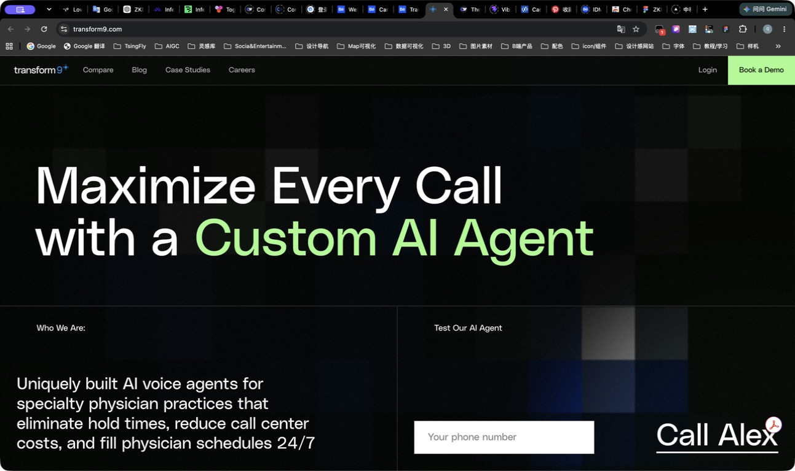
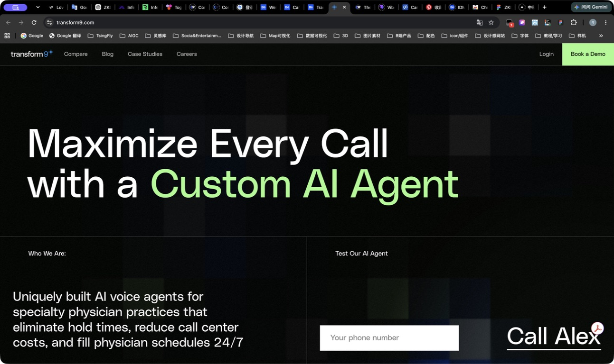
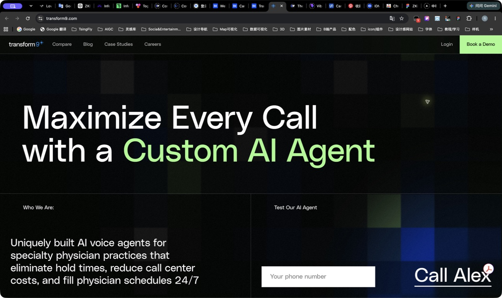
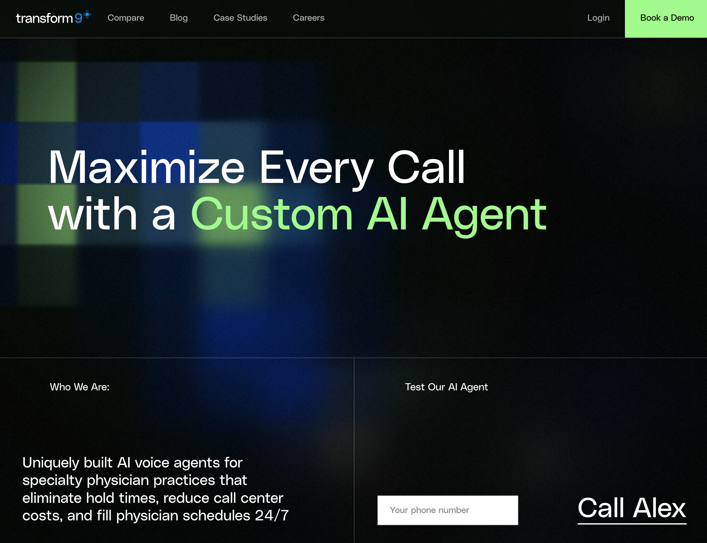
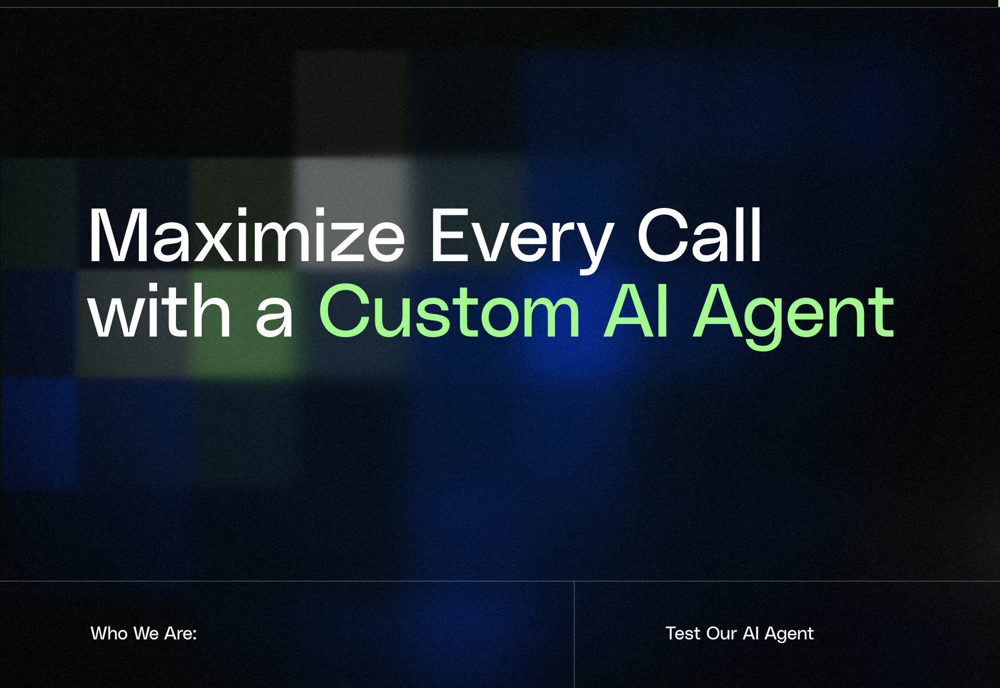
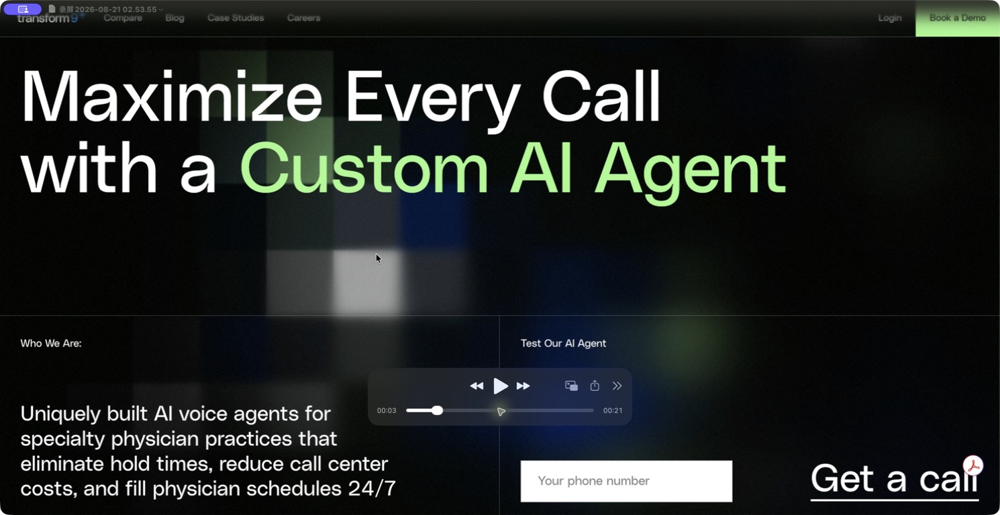
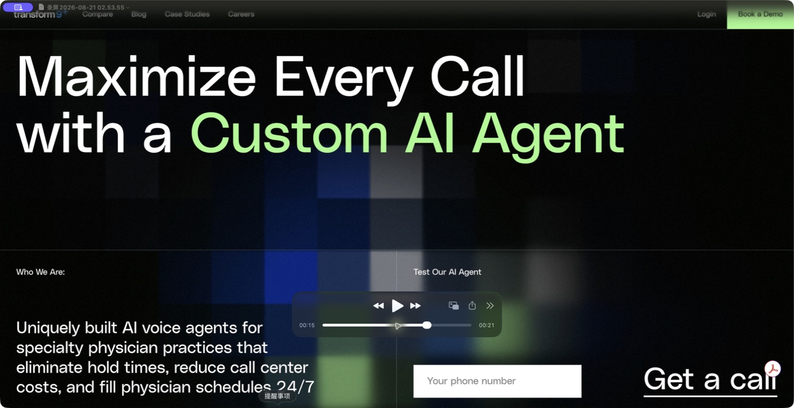
- 当前色调
- 暖白偏灰底色、浅蓝 / 浅青 / 浅绿色块、深色文字；品牌蓝用于标题重点与主要按钮，顶部导航同步改为浅色
- 底层
- 原生 WebGL：4 个蓝 / 青 / 绿光场在原位附近缓慢漂移，叠加连续 Noise 与轻形变；独立 Ambient Blur 以 31s 呼吸
- 数据格
- 硬边 Canvas 2D 正方形矩阵；Color Pulse、White Spike、Dark Cut 和两类 Chain Event 随机低频发生；约 56% 微闪、37% 普通闪、7% 强闪
- 全员呼吸
- 所有当前亮起的格子都以自己的 1.5–4.6s 周期和相位缓慢抬亮、平滑达峰、缓慢回落；采用 smoothstep 呼吸曲线，不做基础格突然跳亮
- 相邻差异
- 格子按行列强制分配 4 档基础透明度；横向相邻差 1 档、纵向相邻差 2 档，即使同色也不会同透明度
- 五类状态
- 每格在呼吸暗谷重新抽取浅灰压暗、蓝、青、绿与白色短峰；仍保持约 58 / 27 / 8 / 5 / 2 的疏密关系，避免同时亮起过多
- 去同色聚类
- 允许偶发两格同色，但禁止水平 / 垂直连续 3 格、同色 2×2 和 L 形三格，不出现同时大片同色
- 事件规模
- 约 70% 单格、20% 双格、10% 三格；链内以 150–400ms 传播；单次彩色脉冲保持自身色域，基础格只在呼吸暗谷重新抽取五色，黑色不产生 Glow
- 截图校准
- 最终以约 100px 为实体色块边长上限，页面越宽会自动增加列数；脉冲只改亮度、不放大实体格，高黑色比例继续控制同时激活数量，前景柔焦收紧到 6px
- 峰值层级
- 常态多数格子保持浅灰或低亮；少数蓝、青、绿提高饱和度，白色只约 2% 并作为彩色区域中的短促峰值
- 首屏构图
- 标题拆为三行并上移到首屏中部；正方形色块无描边，覆盖首屏的结构网格线已全部删除
- 鼠标揭示
- 独立暖白遮罩按单格显隐；桌面半径约 55% 屏宽、限制在 620–1100px，部分格子持续保留浅灰缺口；没有圆形探照灯、鼠标光晕或鼠标换色
- 局部清晰
- 6px 实体柔焦之上另绘无滤镜数据格；最后指针位置约 1–2 圈矩形边缘更清晰，独立 Glow 仍保持大范围扩散
- 离开后状态
- 鼠标离开首屏后保留最后坐标、约 72% 可见强度与约 68% 清晰层，随机事件继续偏向该区域，不会立即退回纯底色
- 稀有强调
- 首轮绿色脉冲后以 240–360ms 延迟触发邻格白色短峰；后续每 9–22s 低频出现，约 66% 绿色、34% 白色
- 延迟 Glow
- 独立 Canvas 在实体变化后 120–220ms 扩散；实体约 0.45s 到峰，Glow 约 0.6–0.75s 到峰，亮度先降而范围继续扩大
- 页面内容
- 真实导航、标题和按钮保持 DOM；GSAP 3.13.0 入场，加载失败时内容仍默认可见
- 动效周期
- 4 个光场 17 / 23 / 27 / 19s；Ambient Blur 31s；常规事件间隔 1.2–4.5s，稀有强调 9–22s；彩色实体 0.8–1.5s，白色 0.35–0.8s；Noise 持续；鼠标惯性约 1.1s
- 不复制
- Transform9+ 代码、Logo、文字、像素分布、布局比例、第三方场景与医疗内容
- 静态回退
- 减少动画或无 JavaScript 时显示浅色静态 DOM 色块；WebGL、实体格、Glow 或 GSAP 单独失败时仍保留其余可用层和完整内容
新增首页视觉参考
借鉴节奏、网格和对比，不复制素材与完整构图
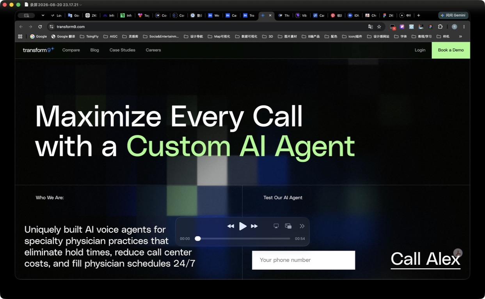
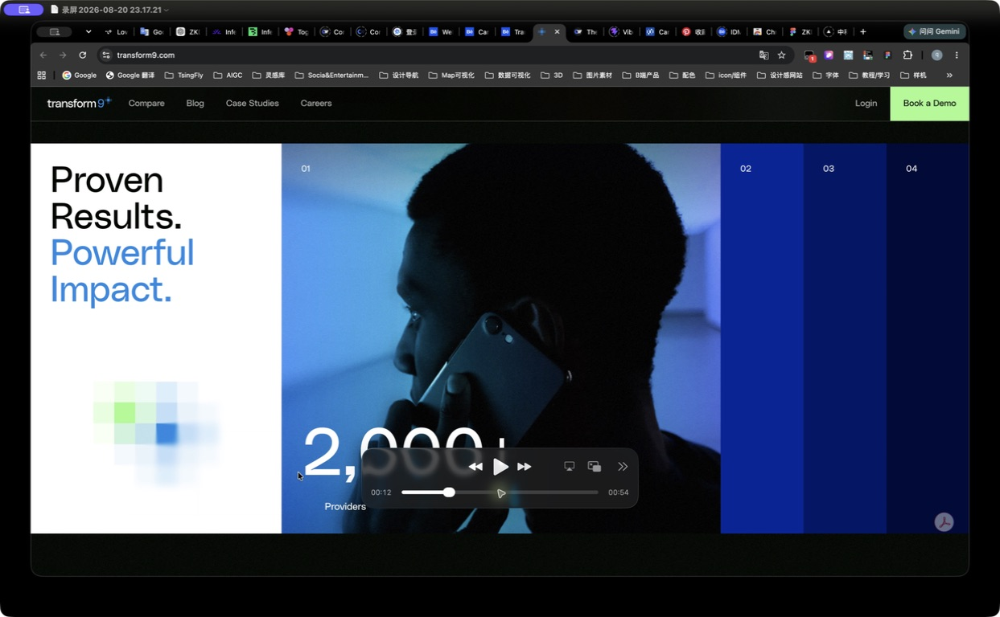
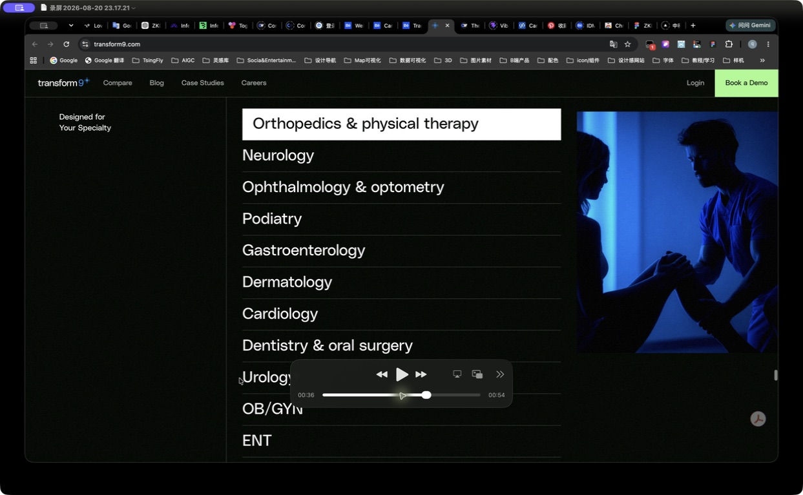
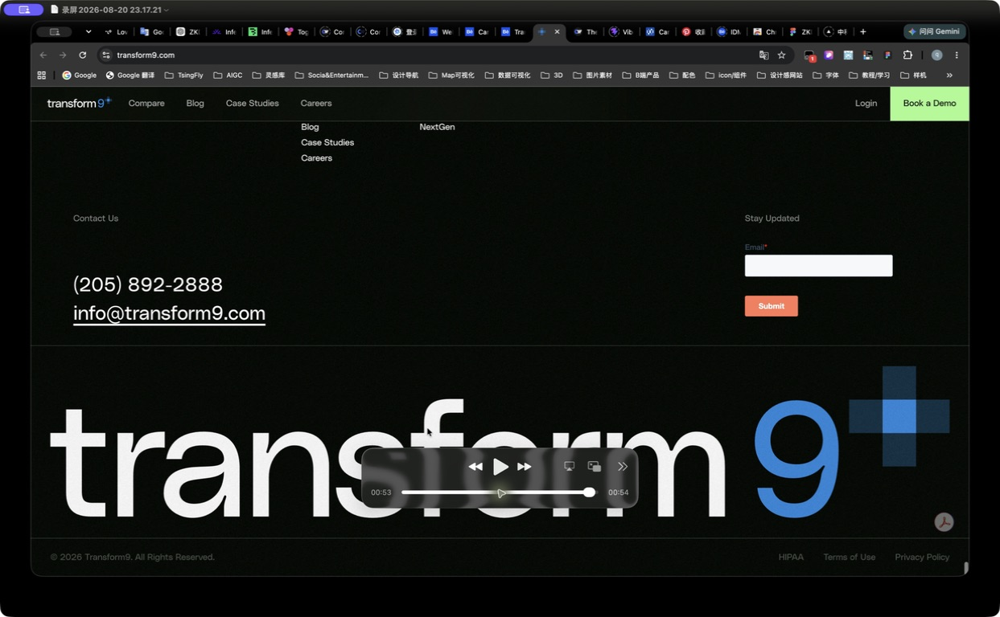
网站文字读起来的感觉
四种写法，当前推荐第一种
技术密度更高
B｜工程说明型
统一纳管异构算力，贯通训练、推理与模型服务工程可信度更强，但首页更像产品手册。传播性更强
C｜品牌宣言型
让国产算力真正进入企业 AI 生产环境更短、更有记忆点，但需要后续内容补足细节。协作感更强
D｜共建顾问型
从第一张国产 GPU 到企业 AI 应用，我们与你一起搭建更温和，适合专家服务，但会削弱平台产品感。内容边界
哪些真实写入，哪些明确不猜
- 已经使用
- 三项产品关系、平台能力、四类方案、三项服务、四组数据、正式联系方式与登录链接
- 诚实保留
- 产品文档、API 文档和帮助中心没有外部地址，继续使用本地说明页
- 没有添加
- 客户名称、Logo、案例结果、资质、团队、价格、项目周期、接口参数和兼容清单
图片决定
国产算力迁移页面暂时使用占位图
占位图会保留稳定的版面空间，并明确说明正式素材以后补充；当前生成候选只在内部记录中保留，不会复制到公开素材目录，也不会被页面加载。
- 首页
- 继续使用代码背景动效，不使用生成图片
- 国产算力迁移
- 保留固定比例文字占位，后续可替换为经过确认的正式素材
- 公开网站
- 不加载本批次的任何生成图片
全部页面
逐页打开检查文字
01 · 首页/index.html
02 · 智算云平台/pages/products/intelligent-computing-cloud.html
03 · Token Hub/pages/products/token-hub.html
04 · AutoDev/pages/products/autodev.html
05 · 国产算力迁移/pages/solutions/domestic-computing-migration.html
06 · 企业智算中心/pages/solutions/enterprise-intelligent-computing-center.html
07 · 企业大模型/pages/solutions/enterprise-large-model.html
08 · AI 应用开发/pages/solutions/ai-application-development.html
09 · 算子优化/pages/services/operator-optimization.html
10 · 数据治理/pages/services/data-governance.html
11 · MaaS 搭建/pages/services/maas-platform.html
12 · 定价/pages/pricing.html
13 · 产品文档/pages/resources/product-docs.html
14 · API 文档/pages/resources/api-docs.html
15 · 帮助中心/pages/resources/help-center.html
16 · 关于我们/pages/about.html
17 · 联系我们/pages/contact.html
显示检查
电脑和手机状态
- 电脑
- 首页原五档检查保持有效；本轮定价页、17 页导航顺序与无描边首屏已在真实电脑窗口复查，无横向溢出或控制台错误
- 平板
- 1180×820、820×1180 已复测：分别为 12 / 9 列，实体格约 98.33 / 91.11px；标题、操作区和移动菜单正常
- 手机
- 390×844 的共用内容页和移动菜单此前已通过；本轮只增加同结构的独立定价链接，最终全站检查仍会统一复测 17 页
页面目录、文字和图片状态已经明确
确认本阶段内容后输入
next:layout这条命令会确认 17 个页面的文字、链接、定价事实边界、首页动效和迁移页占位图，并进入下一步页面排版；真实价格和正式图片以后仍可补充。